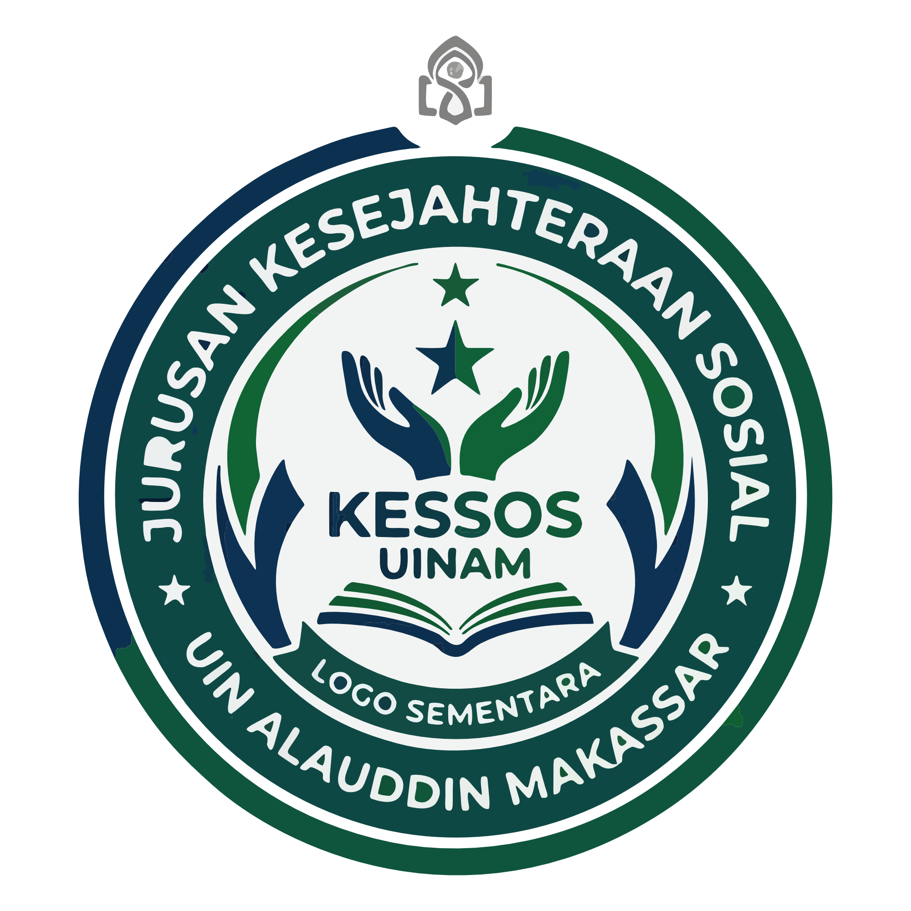

Koordinasi Tim Akreditasi
Pertemuan tim untuk menyusun daftar bukti dan penanggung jawab.

KPM memfasilitasi pengumpulan bukti, perencanaan, dan audit internal untuk kesiapan akreditasi.
Kabar terkait timeline, dokumen, dan kegiatan akreditasi.
Pertemuan tim untuk menyusun daftar bukti dan penanggung jawab.

Proses pengumpulan dokumen pendukung borang akreditasi.

Persiapan audit internal untuk memastikan kesesuaian standar.